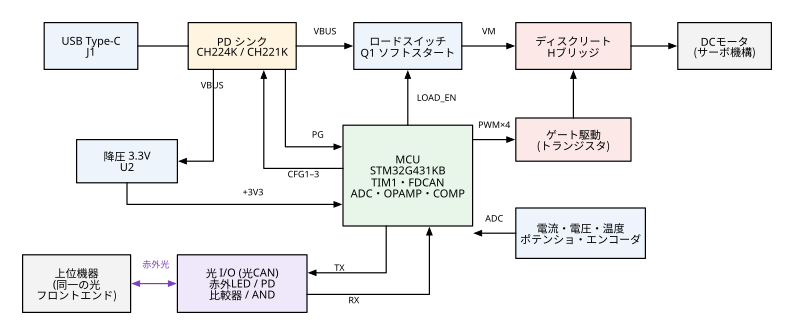
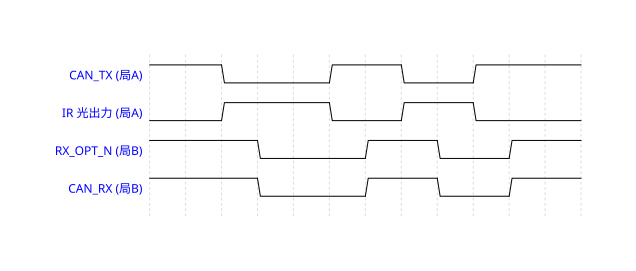

製品データシート（試作設計版）
USB PD 給電・光 CAN 入力 DC サーボ制御基板
型式（仮）：PDOS-01 版：0.1 発行日：2026 年 9 月 25 日
本書は試作前の設計値に基づいています。数値は評価後に改訂されることがあります。発行者：（記入）
1. 概要
PDOS-01 は、USB Type-C の USB Power Delivery（PD）から受電し、専用のモータドライバ IC を使わずに、ディスクリート H ブリッジでブラシ付き DC モータを位置制御（サーボ制御）する基板です。
指令の入出力には、CAN（ISO 11898-1）のプロトコルを赤外光で伝送する「光 CAN」を採用しています。上位機器とは電気的に絶縁され、ノイズの影響も受けにくくなります。光 I/O は、890 nm 赤外 LED と PIN フォトダイオードで構成します。
2. 特長
- USB PD 3.0/2.0 で受電（CH224K で 9/12/15/20 V を MCU から選択。CH221K の固定電圧版を組立オプションで用意）
- PD 交渉の成立を確認してからモータ電源を投入する、ソフトスタート付きのロードスイッチ（突入電流 1.8 A 以下）
- Nch/Pch コンプリメンタリ MOSFET と汎用トランジスタによるディスクリート H ブリッジ。デューティ 100 % に対応し、連続 3 A（既定の電流制限 2.5 A）で駆動
- MCU 内蔵のコンパレータによるハードウェア過電流遮断（1 µs 以内）、過電圧・低電圧・過熱・センサ異常の各保護
- 位置センサ：ポテンショメータ（12 bit）またはインクリメンタルエンコーダ
- 光 CAN：125/250/500 kbps、自局ループバック付き。光スターハブで最大 8 ノードまで接続可能
- CANopen 風の ID を割り付けた、簡潔なアプリケーションプロトコル（位置指令・状態・パラメータ・異常通知・ハートビート）
3. ブロック図

図 1 ブロック図
4. 絶対最大定格
以下の値を一瞬でも超えると、永久的な損傷を生じるおそれがあります。条件の記載がない場合、Ta = 25 ℃ です。
| 項目 | 記号 | 定格 | 単位 | 備考 |
|---|
| VBUS 入力電圧 | VBUS | −0.3 〜 24 | V | D1 SMBJ22A でクランプ |
| モータ電源ノード電圧 | VM | −0.3 〜 26 | V | 回生を含む。D4 SMBJ24A でクランプ |
| モータ出力電流（連続） | IOUT | 3.0 | A | Ta = 25 ℃、§11 の実装条件 |
| モータ出力電流（ピーク） | IOUT(pk) | 9.0 | A | 10 ms 以下、デューティ 10 % 以下 |
| J3 WIPER 入力電圧 | VPOT | −0.3 〜 3.6 | V | アナログ入力（5 V トレラントではありません） |
| J4 A/B 入力電圧 | VENC | −0.3 〜 5.5 | V | 5 V トレラント入力 |
| +3V3 外部取出し電流（J3 ＋ J4） | I3V3X | 50 | mA | |
| 動作周囲温度 | Ta | −10 〜 +60 | ℃ | 結露なきこと |
| 保存温度 | Tstg | −20 〜 +70 | ℃ | 電解コンデンサの定格による |
5. 推奨動作条件
| 項目 | 最小 | 標準 | 最大 | 単位 | 備考 |
|---|
| USB PD ソース出力 | 27 | 45 | 100 | W | PD 3.0/2.0。27 W 未満の場合、15 V は供給されないことがある |
| 受電電圧（交渉値） | 9 | 15 | 20 | V | 既定値 15 V。交渉に失敗した場合は 20 → 12 → 9 V の順に試す |
| モータ定格電圧 | 6 | 12 | VM | V | デューティの上限でモータ定格に合わせる |
| モータ連続電流 | — | — | 2.5 | A | 既定の電流制限値。3.0 A までは Ta ≦ 25 ℃ で可 |
| ポテンショメータ抵抗値 | 1 | 5 | 10 | kΩ | |
| エンコーダ入力周波数（各相） | — | — | 500 | kHz | |
| 帯域内の外乱光照度（受光面） | — | — | 0.25 | mW/cm² | 790〜1050 nm、R62 = 10 kΩ の場合（§7.2） |
6. 電気的特性
条件の記載がない場合、Ta = 25 ℃、VM = 15 V、標準実装（CH224K、R62 = 10 kΩ、R59 未実装）です。「設計値」は計算値であり、試作評価で確認します。
| 項目 | 条件 | 最小 | 標準 | 最大 | 単位 |
|---|
| 待機時消費電流（VBUS） | READY、LED 消灯 | — | 25 | 40 | mA |
| +3V3 出力電圧 | 負荷 0〜300 mA | 3.23 | 3.30 | 3.37 | V |
| VM 立上り時間（ソフトスタート） | VBUS = 9〜20 V | 5 | 6 | 8 | ms |
| VM 投入時の突入電流 | VBUS = 20 V | — | 1.8 | 2.5 | A |
| PWM 周波数 | | 19.8 | 20.0 | 20.2 | kHz |
| デューティ範囲 / 分解能 | | 0 | 1/4250 | 100 | % |
| デッドタイム | 設定範囲 0.5〜2.0 µs | — | 1.0 | — | µs |
| Pch ゲート電圧 VGS(H) | VM ≧ 15 V | −13 | −11.5 | −10 | V |
| Nch ゲート電圧 VGS(L) | VM ≧ 12.5 V | 10.5 | 11.3 | 12 | V |
| 電流検出範囲 / 分解能 | R42 = 20 mΩ、PGA ×16 | 0 | 2.5 mA | 10 | A |
| 電流検出誤差（校正後） | 0.2〜5 A | — | ±2 % | ±3 % ±30 mA | — |
| 過電流遮断レベル | 既定値（1〜9 A で設定可） | 5.1 | 6.0 | 6.9 | A |
| 過電流遮断の応答時間 | 設定値の 150 % の過電流 | — | 0.3 | 1.0 | µs |
| VM 電圧測定分解能 | | — | 8.9 | — | mV |
| 電流制御周期 / 位置制御周期 | | — | 50 / 1000 | — | µs |
7. 光 I/O 仕様（光 CAN）
本基板の指令入力と状態出力は、クラシック CAN のフレームを赤外光で伝送します。CAN トランシーバの代わりに、図 2 の光フロントエンドを使います。
7.1 論理定義
| CAN の状態 | CAN_TX / CAN_RX（ロジック） | 光 | RX_OPT_N |
|---|
| ドミナント | 0（L） | 発光 | 0（L） |
| レセッシブ・アイドル | 1（H） | 消光 | 1（H） |
- 自局ループバック（必須）：CAN_RX = CAN_TX ∧ RX_OPT_N。CAN コントローラが自分の送信ビットを遅れなしで読み返すために必要です（ビットモニタリング・調停・ACK 検出）。
- リセット中や未初期化の状態では CAN_TX が R56 でプルアップされるので、消光（レセッシブ）になります。光路が遮断されたり LED が故障したりしても、バスがドミナントに固着することはありません。
7.2 物理層の光学的・電気的特性
| 送信部（TX） |
|---|
| 発光素子 | TSHF5210（Vishay）GaAlAs |
| ピーク波長 | 890 | nm（半値幅 40 nm） |
| 半値角 | ±10 | ° |
| 順電流 IF | 53 / 100 | mA（R59 未実装 / 実装） |
| 軸上放射強度 Ie | ≧ 45（標準 90） | mW/sr（IF = 53 mA、設計値） |
| 光出力の立上り・立下り | 30 | ns 標準 |
| 送信遅延 tTX | ≦ 50 | ns（CAN_TX → 光 50 %） |
| 消光時の順電流 | < 1 | µA |
| 受信部（RX） |
|---|
| 受光素子 | BPV10NF（Vishay）PIN・昼光カット |
| 感度波長域 | 790〜1050 | nm |
| 受光半値角 | ±20 | ° |
| 受光感度 | ≧ 30（標準 55） | µA/(mW/cm²)（870 nm） |
| 判定閾値（光電流） | 33 / 30 | µA（ON 判定 / OFF 判定、R62 = 10 kΩ） |
| ドミナント判定に必要な照度 | ≧ 2.2 | mW/cm²（最悪値、閾値の 2 倍） |
| レセッシブを保てる外乱照度 | ≦ 0.25 | mW/cm²（帯域内） |
| 受信遅延 tRX | ≦ 0.26 | µs（光 50 % → RX_OPT_N） |
7.3 受光負荷 R62 の選択と通信距離
光軸を合わせた空間伝送での値です（Ee = Ie / d²、閾値の 2 倍の光電流を確保できる距離）。最悪値は、放射強度と受光感度がともに最小の場合です。
| R62 | 判定閾値
（光電流） | tlink 最大 | 最大ビットレート | 通信距離 IF = 53 mA | 通信距離 IF = 100 mA |
|---|
| 最悪値 | 標準 | 最悪値 | 標準 |
|---|
| 10 kΩ（標準） | 30 µA | 0.35 µs | 500 kbps | 45 mm | 87 mm | 64 mm | 123 mm |
| 22 kΩ | 14 µA | 0.6 µs | 250 kbps | 67 mm | 128 mm | 95 mm | 181 mm |
| 47 kΩ | 6.4 µA | 1.2 µs | 125 kbps | 98 mm | 190 mm | 138 mm | 268 mm |
- 最小距離は 5 mm です（機械的な制約。受光側は D11 でクランプするので、近距離でも飽和しません）。
- 光軸のずれの許容範囲は ±5° が目安です（照度の低下は約 25 % 以内）。
- さらに距離が必要な場合や外乱光が強い場合は、φ1 mm のプラスチック光ファイバ（POF）をスリーブで LED と PD に結合して使用します。
- 外乱光の許容値は、R62 の値に反比例して小さくなります（22 kΩ で 0.11、47 kΩ で 0.05 mW/cm²）。
図 2 光フロントエンド回路（送信部・受信部・自局ループバック）
7.4 タイミング

図 3 光 CAN の信号タイミング（遅延は誇張して描いています）
| 記号 | 項目 | 条件 | 最小 | 標準 | 最大 | 単位 |
|---|
| tTX | CAN_TX 変化 → 光出力 50 % | | — | 35 | 50 | ns |
| tRX | 光入力 50 % → RX_OPT_N 変化 | R62 = 10 kΩ、閾値の 2 倍以上の光 | — | 0.15 | 0.26 | µs |
| tloop | CAN_TX → 自局 CAN_RX | U6 経由 | — | 4 | 10 | ns |
| tlink | 局 A CAN_TX → 局 B CAN_RX | R62 = 10 kΩ | — | 0.2 | 0.35 | µs |
| Δtdom | 受信側でのドミナント幅の伸縮 | R62 = 10 kΩ | −0.05 | — | +0.2 | µs |
ビットタイミングの条件：往復遅延 2 × tlink（ハブを使う場合はハブの遅延を加える）が、同期セグメントからサンプル点までの時間より十分短いこと。
7.5 データリンク層
| 項目 | 仕様 |
|---|
| プロトコル | ISO 11898-1 クラシック CAN（CAN 2.0A）。CAN FD には対応しません |
| 識別子 | 11 ビット標準 ID（29 ビット拡張 ID のフレームは無視します） |
| ビットレート | 125 / 250（既定） / 500 kbps（パラメータ 0x02、再起動後に有効） |
| ビットタイミング（FDCAN カーネルクロック = 8 MHz） | 500 kbps：16 tq（TSEG1 13、TSEG2 2、SJW 2）／250 kbps：32 tq（TSEG1 27、TSEG2 4、SJW 4）／125 kbps：分周 2・32 tq。いずれもサンプル点 87.5 % |
| 発振器の精度 | 水晶 8 MHz ±20 ppm（CAN の要求 ±0.5 % 以内） |
| ACK | ほかに受信ノード（上位機器など）が少なくとも 1 局必要です |
| エラー処理 | ISO 11898-1 に準拠（エラーパッシブ、バスオフ、自動復帰） |
| 推奨バス負荷 | 50 % 以下（250 kbps・8 バイトのフレームで 1 フレーム約 0.54 ms） |
7.6 トポロジと対向機器の要件
- 1 対 1：上位機器と本基板を、互いの LED が相手の PD を向くように対向させます。同じ基板同士を向かい合わせると、TX と RX がそのまま向き合います。
- 多ノード（最大 8）：光スターハブを使います。ハブは、全ポートの受信信号の AND（どれか 1 局がドミナントならドミナント）を全ポートへ送り返します。
- 対向機器（上位機器）の要件：
- CAN コントローラの TX/RX ロジック信号に、図 2 と同じ光フロントエンドを接続すること（CAN トランシーバは使いません）。例：STM32 の bxCAN/FDCAN、ESP32 の TWAI、RP2040 の can2040 など。
- 自局ループバック（CAN_RX = CAN_TX ∧ RX_OPT_N）を必ず実装すること。
- ドミナント時に、本基板の受光面で 2.2 mW/cm² 以上（890 ± 30 nm）の照度を与えること。レセッシブ時には発光しないこと。
- §7.5 と同じビットレート、およびサンプル点 75〜87.5 % で動作すること。
注意：赤外光は目に見えません。発光中の LED を至近距離から直視しないでください。製品化の際には、IEC 62471（ランプ及びランプシステムの光生物学的安全性）に基づく評価を行ってください。
8. アプリケーション層（メッセージ仕様）
ID の割付は CANopen に似せていますが、CANopen には準拠しません。n はノード ID（1〜8、DIP スイッチ値 + 1）です。多バイト値はリトルエンディアンです。
| ID | 名称 | 方向 | DLC | 送信タイミング |
|---|
| 0x000 | NMT（全局制御） | 上位 → 全局 | 2 | 随時 |
| 0x080 | SYNC | 上位 → 全局 | 0 | 任意（同時適用モードのとき） |
| 0x080+n | EMCY（異常通知） | 局 → 上位 | 4 | 異常が発生したとき |
| 0x180+n | STATUS（状態） | 局 → 上位 | 8 | CMD を受信してから 1 ms 以内、または周期送信 |
| 0x200+n | CMD（動作指令） | 上位 → 局 | 8 | 推奨 10 ms 周期（タイムアウト既定 200 ms） |
| 0x580+n | PARAM 応答 | 局 → 上位 | 8 | 要求への応答 |
| 0x600+n | PARAM 要求 | 上位 → 局 | 8 | 随時 |
| 0x700+n | HEARTBEAT | 局 → 上位 | 4 | 既定 1 s 周期 |
8.1 CMD（0x200+n）
| バイト | 0 | 1 | 2–3 | 4–5 | 6–7 |
|---|
| 内容 | mode | seq | target（int16） | vel_limit（uint16） | cur_limit（uint16） |
| 単位 | — | 0–255 | mode 2：0.01°
mode 3：0.01 % | 0.1 °/s（0 = 既定） | mA（0 = 既定） |
mode：0x00 惰性（全 FET OFF）、0x01 ブレーキ（両ローサイド ON）、0x02 位置制御、0x03 デューティ直接指令（−10000〜+10000）。seq は STATUS でそのまま返されます。
8.2 STATUS（0x180+n）
| バイト | 0 | 1 | 2–3 | 4–5 | 6 | 7 |
|---|
| 内容 | state | seq | position（int16） | current（int16） | VM（uint8） | fault flags |
| 単位 | 下表 | エコー | 0.01° | mA（符号は回転方向） | 0.1 V | 下表 |
| state | 意味 |
|---|
| 0 | BOOT（初期化中） |
| 1 | PD_WAIT（PD 交渉中） |
| 2 | READY（待機。ブリッジ OFF） |
| 3 | RUN（運転中） |
| 4 | FAULT（異常ラッチ） |
| bit | fault flags |
|---|
| 0 | OCP 過電流 |
| 1 | OVP 過電圧 |
| 2 | UVP 低電圧 |
| 3 | OTP 過熱 |
| 4 | SENSOR 位置センサ異常 |
| 5 | TIMEOUT 指令途絶 |
| 6 | PD_FAIL 受電失敗 |
| 7 | CAN_ERR エラーパッシブ以上 |
8.3 NMT（0x000）、EMCY（0x080+n）、HEARTBEAT（0x700+n）
| メッセージ | バイト配置 |
|---|
| NMT | B0：0x01 運転許可／0x02 停止（惰性）／0x03 非常停止（ブレーキ）／0x80 異常リセット／0x81 再起動。B1：対象ノード（0 = 全局） |
| EMCY | B0：異常コード（0x01 OCP、0x02 OVP、0x03 UVP、0x04 OTP、0x05 位置センサ、0x06 指令途絶、0x07 PD 失敗、0x08 バスオフから復帰）。B1：state。B2–3：詳細値（電流 mA、電圧 10 mV 単位、温度 ℃ など） |
| HEARTBEAT | B0：state。B1：交渉した PD 電圧 [V]。B2：基板温度（int8、℃）。B3：ファームウェア版数 |
8.4 PARAM 要求（0x600+n）・応答（0x580+n）
| バイト | 0 | 1 | 2–5 | 6 | 7 |
|---|
| 要求 | op：0x40 読出し／0x23 書込み／0x10 フラッシュ保存／0x11 初期値に戻す | index | value（int32） | 0 | 0 |
| 応答 | op のエコー（異常時は 0x80） | index | value（int32） | err：0 正常、1 index なし、2 範囲外、3 読出し専用、4 RUN 中は変更不可 | 0 |
| index | 名称 | 単位 | 既定値 | 範囲・備考 |
|---|
| 0x01 | NODE_ID_OVERRIDE | — | 0 | 0 = DIP の値を使う、1〜8 |
| 0x02 | CAN_BITRATE | kbps | 250 | 125 / 250 / 500（保存後、再起動で有効） |
| 0x03 | PD_REQUEST_V | V | 15 | 9 / 12 / 15 / 20（CH224K 実装時のみ） |
| 0x04 | PD_FALLBACK | bit | 0x0F | bit0 9 V、bit1 12 V、bit2 15 V、bit3 20 V |
| 0x05 | MOTOR_RATED_mV | mV | 12000 | デューティ上限 = 定格 / VM |
| 0x10 | CUR_LIMIT_mA | mA | 2500 | 0〜5000 |
| 0x11 | OCP_TRIP_mA | mA | 6000 | 1000〜9000（ハードウェア遮断） |
| 0x12 | VEL_LIMIT | 0.1 °/s | 3000 | 1〜30000 |
| 0x13 | ACC_LIMIT | °/s² | 3000 | 1〜100000 |
| 0x20–0x22 | POS_KP / KI / KD | ×0.001 | — | 位置 PID ゲイン |
| 0x23–0x24 | CUR_KP / KI | ×0.001 | — | 電流 PI ゲイン |
| 0x30 | POS_SOURCE | — | 0 | 0 ポテンショメータ、1 エンコーダ |
| 0x31 / 0x32 | POT_RAW_MIN / MAX | LSB | 200 / 3895 | 校正値 |
| 0x33 / 0x34 | ANGLE_AT_MIN / MAX | 0.01° | −13500 / 13500 | 校正値 |
| 0x35 / 0x36 | SOFT_LIMIT_MIN / MAX | 0.01° | −13000 / 13000 | 指令値の制限 |
| 0x37 | ENC_CPR | count/rev | 4096 | 4 逓倍後の値 |
| 0x40 | CMD_TIMEOUT_ms | ms | 200 | 0 = 無効 |
| 0x41 | TIMEOUT_ACTION | — | 1 | 0 惰性、1 ブレーキ、2 位置保持 |
| 0x42 | STATUS_PERIOD_ms | ms | 0 | 0 = CMD への応答のみ |
| 0x43 | HEARTBEAT_ms | ms | 1000 | 0 = 送信しない |
| 0x44 | SYNC_MODE | — | 0 | 1 = CMD を保留し、SYNC 受信時に適用する |
| 0x50 / 0x51 | OVP_mV / UVP_mV | mV | 0 / 0 | 0 = 自動（交渉した電圧の ×1.2 / ×0.8） |
| 0x52 | OTP_C | ℃ | 85 | 60〜100 |
| 0x60 | DEAD_TIME_ns | ns | 1000 | 500〜2000 |
9. その他の I/O とコネクタ
| コネクタ | 形状 | ピン配置 | 仕様 |
|---|
| J1 | USB Type-C レセプタクル | VBUS / GND / CC1 / CC2 / D+ / D− | 受電専用（USB データ通信はしない） |
| J2 | 端子台 2P 5.0 mm | 1：MOT_A 2：MOT_B | モータ出力。正転時は MOT_A が＋ |
| J3 | JST XH 3P | 1：+3V3 2：WIPER 3：GND | ポテンショメータ 1〜10 kΩ。入力 RC 1 kΩ / 100 nF |
| J4 | JST XH 4P | 1：+3V3 2：GND 3：A 4：B | エンコーダ。4.7 kΩ でプルアップ、100 Ω / 100 pF |
| J5 | ピンヘッダ 1×5 2.54 mm | 1：+3V3 2：SWDIO 3：SWCLK 4：NRST 5：GND | 書込み・デバッグ |
| SW1 | DIP 3P | bit0〜bit2 | ノード ID = 値 + 1 |
| 光ポート | D9（TX）・D10（RX） | 基板の同じ辺、10 mm ピッチ、光軸は基板上面から約 4 mm | §7 |
| LED | D2 橙 / D8 緑 | D2：PD 交渉成立 D8：状態表示 | D8：READY はゆっくり点滅、RUN は点灯、FAULT は速い点滅 |
10. USB PD 受電
10.1 CH224K（標準実装）
| 要求電圧 | CFG1 | CFG2 | CFG3 |
|---|
| 5 V | 1 | — | — |
| 9 V | 0 | 0 | 0 |
| 12 V | 0 | 0 | 1 |
| 15 V（既定） | 0 | 1 | 1 |
| 20 V | 0 | 1 | 0 |
CFG1〜3 は MCU（PB5 / PB7 / PA6）から 100 Ω を介して駆動します。CFG2/CFG3 に 3.7 V を超える電圧を加えてはいけません。PG（オープンドレイン、交渉成立で L）は PB4 で読みます。
10.2 CH221K（組立オプション B）
| R8（CFG–VDD 間） | 10 kΩ | 20 kΩ | 47 kΩ | 100 kΩ | 200 kΩ |
|---|
| 要求電圧 | 5 V | 9 V | 12 V | 15 V | 20 V |
|---|
CH221K の注意：CFG ピンの耐圧は 6.5 V です。CFG を High 側へつなぐときは、VBUS ではなく VDD（または MCU の IO）に接続してください。VBUS に接続すると、IC 自身が要求した電圧で破損します。また、CH221K は抵抗でしか電圧を設定できないので、動作中に要求電圧を変えることはできません（参考：Qiita「CH221Kを使う際の注意点」）。抵抗値の表は、最新のメーカーデータシートで必ず確認してください。
10.3 動作シーケンス
- USB-C を接続すると VBUS = 5 V が供給され、+3V3 が立ち上がって MCU が起動します（BOOT）。
- MCU が CFG を設定し、CH224K が PD 交渉を行います（PD_WAIT）。PG が 1 s 以内に L にならない場合は、次の電圧候補を試します。
- PG = L を確認したら LOAD_EN = 1 にし、VM をソフトスタートで投入します。10 ms 後に VM が要求電圧の ±10 % 以内にあれば READY、外れていれば FAULT（PD_FAIL）になります。
- NMT 運転許可を受け、CMD の mode が 2 または 3 のときに RUN になります。
11. 保護動作
| 異常 | 検出条件 | 動作 | 復帰 |
|---|
| 過電流 | 電流 ＞ OCP_TRIP_mA（ハードウェアコンパレータ） | 全 FET OFF（1 µs 以内） | NMT 0x80（異常リセット） |
| 過電圧 | VM ＞ OVP（既定：交渉電圧 × 1.2、上限 24 V） | ショートブレーキで回生を止める |
| 低電圧 | VM ＜ UVP が 10 ms 継続 | 惰性、ロードスイッチ OFF |
| 過熱 | 基板温度 ＞ OTP_C（既定 85 ℃） | 惰性 |
| 位置センサ異常 | POT の生値が 1 % 未満または 99 % 超 | 惰性 |
| 指令途絶 | CMD の間隔 ＞ CMD_TIMEOUT_ms | TIMEOUT_ACTION | CMD を受信すると自動で復帰 |
| CAN バスオフ | 送信エラーカウンタ ＞ 255 | 惰性 | ISO 11898-1 の手順で自動復帰 |
設計上の実装条件：2 層基板、銅箔 2 oz、MOSFET 1 個あたり 4 cm² 以上のベタ。
12. 使用上の注意
- USB PD ソースの定格電力を超える負荷（モータの拘束など）がかかると、ソース側の保護で VBUS が遮断されることがあります。CUR_LIMIT_mA は、ソースの定格電流以下に設定してください。
- モータの回生エネルギーは USB ソースへ戻せません。大きな慣性負荷を急減速させると VM が上昇し、OVP でブレーキ停止します。ACC_LIMIT を適切に設定してください。
- 光ポートの前に遮蔽物・反射物・強い外乱光（直射日光、ハロゲン灯、白熱灯）がないことを確認してください。
- 本基板は USB のデータ通信を行いません。ファームウェアの書込みは J5（SWD）から行います。
13. 改訂履歴
| 版 | 日付 | 内容 |
|---|
| 0.1 | 2026-09-25 | 初版（試作前の設計値） |